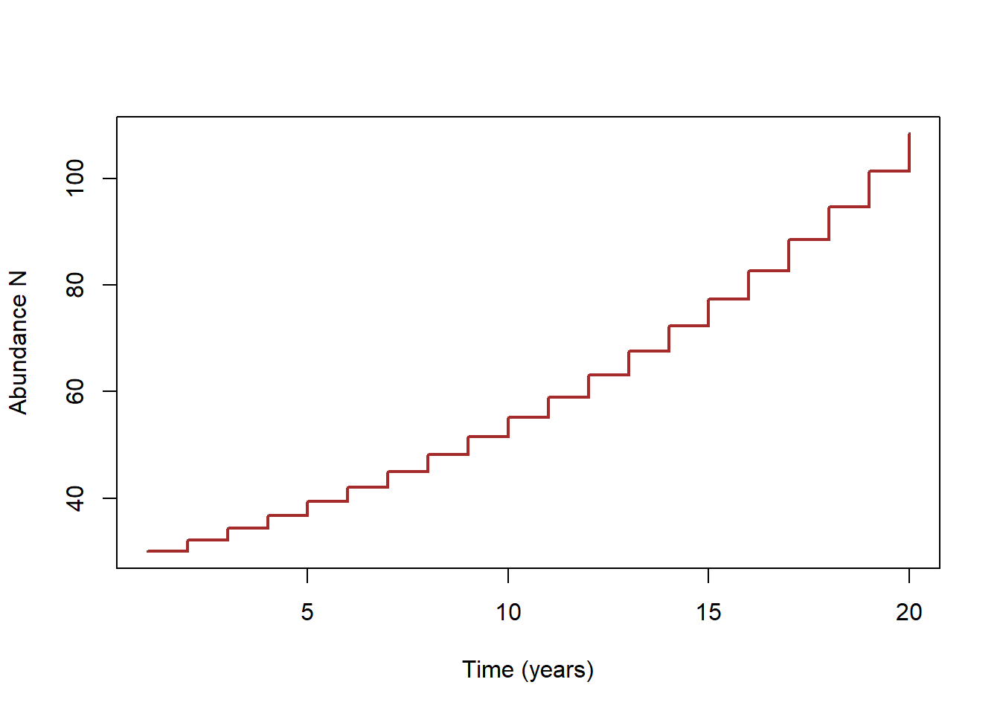
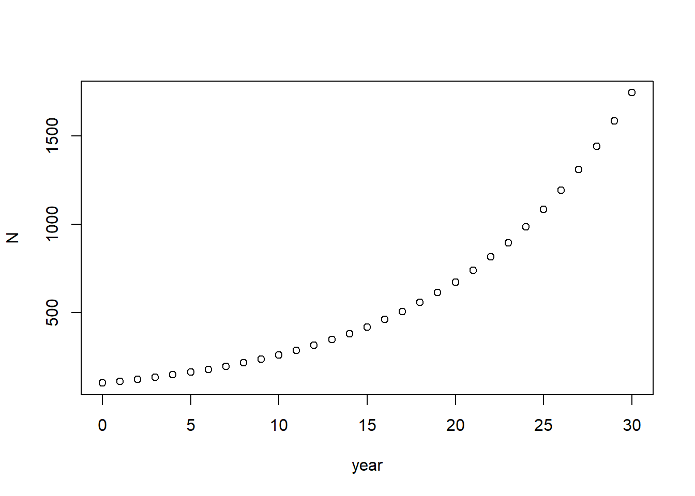

Lab 1: exponential growth
NRES 470/670
Spring 2024
In this lab we will have an opportunity to do population modeling using three different software packages: MS Excel, R, and InsightMaker. I encourage you to work in groups- but just remember you must submit your answers individually on WebCampus!
Nomenclature for Population Ecology
First of all, we need a symbol to represent population size. This is \(N\)!
\(\Delta N\) represents the change in population size, \({N_{t+1}}-{N_t}\)
The famous “BIDE” equation is a way to break down \(\Delta N\) into components.
\(\Delta N = B + I - D - E \qquad \text{(Eq. 1)}\)
where \(B\) represents the number of births, \(I\) represents the number of immigrants, \(D\) represents the number of deaths, and \(E\) represents the number of emigrants.
If we ignore immigration and emigration, then the BIDE equation simplifies to:
\(\Delta N = B - D\)
Now let’s focus on \(B\) and \(D\). The important thing to recognize is that the total number of births and deaths should get larger as the population size gets larger. That is, \(B\) and \(D\) are not constant - they change as the population size \(N\) gets bigger or smaller.
How can we re-express this statement in terms of more fundamental properties of the population?
What about the percent of the population that dies each year (percent mortality)? Or… the number of births per female (per-capita birth rate)?
We will often call these quantities population vital rates (or per-capita demographic rates). These quantities do not necessarily change as the population size \(N\) gets bigger or smaller (at least in a simple exponential growth model).
Examples of population vital rates:
- “for every female in the population, we expect 1.1 offspring will be born (birth, or fertility, rate)”
- “for every individual in the population today, we expect 0.8 new one-year-olds to enter the population next year” (fecundity rate)
- “we expect 3% of the current population to be harvested this year” (harvest rate)
- “we expect 10% of the current population to die in the coming year” (mortality rate)
- “we expect 90% of the current population to survive in the coming year” (survival rate)
The population vital rates (per-capita demographic rates) are often expressed as lower case letters. So \(b\) represents per-capita birth rate, and \(d\) represents fractional or (per-capita) death rate (fraction of the population dying each year).
To compute the per-capita birth rate \(b\), for example, we can divide the total number of births (B) by the population size N:
\(b = \frac {B_t}{N_t} \qquad \text{(Eq. 2)}\)
–or, re-factored in terms of B (total births)–
\(B_t = b \cdot N_t \qquad \text{(Eq. 3)}\)
The letter \(t\) represents time (usually in years). So the above equation could be described as follows: “the number of births in a given year is equal to the per-capita birth rate times the total population size that year”
Similarly,
\(D_t = d \cdot N_t \qquad \text{(Eq. 4)}\)
Okay, we’re almost there.
If \(\Delta N = B - D \qquad \text{(Eq. 5)}\)
then
\(\Delta N = b \cdot N_t - d \cdot N_t\qquad \text{(Eq. 6)}\)
which is equal to:
\(\Delta N = (b - d) \cdot N_t \qquad \text{(Eq. 7)}\)
which could also be written:
\(\Delta N = r \cdot N_t\qquad \text{(Eq. 8)}\)
Where \(r\) represents the difference between the per-capita birth and death and death rates.
This is probably the most fundamental equation of population ecology.
If \(r\) is positive, then births are greater than deaths and the population grows.
\(r>0 \implies growing \space population\)
If \(r\) is negative then deaths exceed births and the population declines.
\(r<0 \implies declining \space population\)
Continuous population growth
A continuously growing population is always growing over time- no matter how small the time step, there is always some population growth during that time period.
We can use calculus notation to consider the change in population size for a continuously growing population:
\(\frac{\partial N}{\partial t} = r \cdot N \qquad \text{(Eq. 9)}\)
If you integrate this equation over time from the initial time (t=0) to time t, you get an equation that describes the population size at any given time \(t\):
\(N_t = N_0 e^{rt} \qquad \text{(Eq. 10)}\)
That is, population size at time \(t\) is equal to the population size at time zero (initial abundance, \(N_0\)) multiplied by the base of the natural logarithm (e) to the \(rt\) power.
There you have it! Now you can compute population growth and population size over time for any population that is growing continuously!
Doubling time
One of the most intuitive ways to think about continuous exponential growth is in terms of the doubling time- the time (usually in years) it takes for a population to double in size.
Let’s compute the doubling time for a population with 7% annual growth:
If you replace \(N_t\) in the above equation (eq. 10) with \(2*N_0\) (representing a doubling of the initial population size), replace \(r\) with 0.07 (representing 7% annual growth), then you can solve for t. The result is that you get the equation: \(t = \frac{ln(2)}{0.07}\). Since the natural logarithm of 2 is 0.69, we can substitute 0.7 as a close approximation. Since we tend to think best in percentages, we can multiply by 100 (converting to percent) and we get \(t = \frac{70}{7}\), which means this population will double approximately every 10 years!
In general, if you want to compute the approximate doubling time of a population, you can simply take the number 70 and divide by the annual growth percentage: so if you have 7% annual growth per year, then to compute doubling time just take the number 70, divide by the percent rate of growth (here, 7%), and there you have it- the population will double approximately every 10 years!
Discrete population growth
In a population with discrete growth, the population grows in spurts- periods of no growth are interspersed with periods of rapid population growth. Effectively, this results in a “stair-step” model, looking something like this:

You’ve probably seen the term “Lambda” (greek symbol \(\lambda\)) before to represent population growth rate. Lambda is the “multiplicative growth rate”, also known as the finite rate of growth of a population.
Lambda is what you multiply current abundance by to compute abundance in the next time step. It itself can be computed using the formula \(\frac {N_{t+1}}{N_t}\)
Since Lambda is what we use to “bump” population size up from what it is this year to what it will be next year, Lambda is a representation of discrete population growth (it implicitly represents a “stair-step” model of population growth.
We can derive Lambda using the following logic:
\(N_{t+1}=N_t + B - D \qquad \text{(Eq. 11)}\)
\(N_{t+1}=N_t + b_d \cdot N_t - d_d \cdot N_t \qquad \text{(Eq. 12)}\)
I am using the d subscript to indicate that the per-capita birth and death rates now represent discrete growth (births and deaths only occur once in each time step)
\(N_{t+1}=N_t + (b_d - d_d) \cdot N_t \qquad \text{(Eq. 13)}\)
\(N_{t+1}=N_t + r_d \cdot N_t \qquad \text{(Eq. 14)}\)
\(N_{t+1}=N_t \cdot (1 + r_d) \qquad \text{(Eq. 15)}\)
\(N_{t+1}=\lambda \cdot N_t \qquad \text{(Eq. 16)}\)
A Lambda above 1 implies that births exceed deaths each year, and the population is growing:
\(\lambda>1 \implies growing \space population\)
And…
\(\lambda<1 \implies growing \space population\)
Finally, if you want to compute the population size after \(t\) time-steps of discrete population growth (analogous to eq. 10) you can use the following equation:
\(N_t = N_0 * \lambda^{t} \qquad \text{(Eq. 17)}\)
Difference between discrete and continuous growth
It can be difficult to conceptualize the difference between discrete and continuous growth.
Here are some expressions to illustrate the difference between discrete and continuous population vital rates:
\(b=0.9\): “New individuals enter
into the population at a rate of 0.9 per female per year, and these new
individuals are born continuously throughout the year”
\(b_d=0.9\): “Babies enter the
population at a per-capita rate of 0.9 per female per year, but
individuals only give birth once each spring”
\(d=0.23\): “Approximately 23% of the
population dies each year, but the deaths occur evenly throughout the
year”
\(d_d=0.23\): “Approximately 23% of the
population dies each year, but nearly all the deaths are assumed to
occur during winter hibernation”
\(r=0.15\): “The population is growing
constantly (continuously) at a rate of exactly 15% per year” NOTE: you
will not have exactly 15% more individuals in the population one year
later, but in fact you will have 16.2% more individuals due to the
process of compounding (because the population keeps growing
even within each year- the population doesn’t just remain at it’s
initial size all year long)! This should be more clear by the end of
this lab.
\(r_d=0.15\): “The population size one
year from now will be exactly 15% higher than it is today”
For a continuously growing population, you can convert seamlessly between the population growth multiplier Lambda (\(\lambda\)) and the continuous rate of growth (r) easily: all you need to do is use the natural logarithm:
\(e^r = \lambda\)
\(r = ln(\lambda)\)
For a discrete-growth population, the conversion is slightly different:
\(1+r_d= \lambda\) \(r_d = \lambda-1\)
Q What is lambda for a population that growing at a discrete rate of 7% per year?
Q What is lambda for a population that growing continuously at a rate of 7% per year?
Okay let’s start the lab! The first software we will use is our old friend, Microsoft Excel! (or Google Sheets, or your preferred spreadsheet software!)
Exponential growth in Excel
We will start with an in-class demonstration:
Open the Excel spreadsheet ExpGrowthExcel.xlsx. To download this file, right click on the link and select “Save link as..”. In the first column, we have a time step of 1 year for 30 years. In the second column, we have an initial population size (\(N_0\)) of 100 individuals. We also have a per-capita rate of increase (\(r\)) that is currently set at 0.1 (10%) per year. Assume for now that \(r\) represents \(r_d\), or the discrete rate of increase. That is: the population size next year will be exactly 10% larger than the population this year.
To generate \(N_t\) for the remaining time steps, we need to apply our knowledge of population ecology. Specifically we need to apply equation 16, above for modeling discrete population growth in a single time step. You will first want to convert \(r_d\) to \(\lambda\) using the formula \(\lambda = 1+r_d\). Do this by clicking in a cell (e.g., cell D5), typing ‘=’ in the cell (indicating that you are about to enter a formula), clicking on cell D3 (indicating that you will use this cell’s value in the formula) and adding 1. As you do this, you should see the equation you are creating appear in the equation editor. The formula should look like
=D3+1. Next, you can apply equation 16 directly by clicking in the empty \(N_{1}\) cell (position B3), typing=in the cell (indicating that you are about to enter a formula), clicking on the \(N_{0}\) cell (position B2– indicating that you will use this cell’s value in the formula), and completing the equation (e.g.,=B2*D5, where cell D5 stores \(\lambda\)). Hit enter.You can fill the remainder of the cells using the same equation for the other time steps by clicking and dragging (or double clicking) the small square at the bottom of the N(2) cell, which appears when the cell is selected.
What happened? We are not seeing a growing population here- actually it seems quite flat! this is surely not what we want! Click on the N(3) cell to see what equation is being used to calculate the cell value. The equation is
=B3*D6. The B3 part is correct - we want to calculate the N(3) population size using the \(N\) from the previous timestep - but the D6 part is incorrect. We always want to use the same \(\lambda\) - which is always in the same cell (cell D5). You can see that when you drag down an equation as we have done, Excel adds 1 for each row so that the equation references the same relative positions in the spreadsheet for each new cell you want to calculate. We like that Excel did that for \(N\), but not for \(r\) or \(\lambda\), so we can tell Excel to keep this value in the same row (row 3) for \(r\) (or \(\lambda\)) by inserting a dollar sign in our equation (in Excel terminology, this is called a ‘fixed reference’).In the N(2) cell, edit the equation in the equation editor (or ‘function bar’) above the spreadsheet so that there is a dollar sign in D3 (i.e.,
D$3instead ofD3) (or just use the F4 shortcut).Now drag the equation down again, and you should have a population size in row 32 of 1745 (representing the population size at year 30!).
NOTE: you can format the cells in column B to be whole numbers using the context menu (select column B >> Format Cells >> Number >> Decimal places = 0)
- Now we will plot our population against time. Select both columns of data, and select the scatter plot (or “line plot”) option under the ‘Insert’ menu. A plot of \(N\) by Time will automatically appear. You can change the \(r\) value, the data and chart will automatically adjust.
Exercise 1
Please provide short answers to the following questions on WebCampus (you will be asked to provide your Excel spreadsheet).
Short answer (1a.) [numeric response] Change the per-capita growth rate to 0.07 in cell D3. Based on what we did together in the demo, this should change the value of abundance in year 30 (cell B32) automatically. What is the new final abundance at year 30? assuming discrete annual population growth?
Short answer (1b.) [numeric AND short text response] Assuming that the per-capita rate of growth \(r\) in this model represents continuous and not discrete growth, apply equation 10 (continuous-growth model- see above) to compute the expected population size in year 30. What is the new final abundance at year 30, assuming continuous growth?. Is this new value different from your answer in question 1a (discrete growth model)? If so, did the continuous model produce a larger or smaller population estimate (for year 30) than the discrete growth model?
HINT: computing abundance at year 30 in the continuous-time model can be performed as a single calculation (using eq. 10, above)- don’t over-think this one. You may use a scientific calculator instead of Excel if you’d like.
HINT: use the EXP function in Excel to raise e (the base of the natural logarithm) to any power: for example, to compute \(e^{0.07}\) you type “=EXP(0.07)” in Excel.
In general, if you don’t know the syntax for a function in Excel, click on the button labeled “fx” and you can search for functions using search terms!
- Short answer (1c.) [short text response] What are the units of the per-capita population growth rate \(r\) (also known as “intrinsic rate of growth”)?
HINT: The answer is in the Gotelli book. Note that abundance N is in units of individuals. Time is generally represented in units of years in wildlife population models.
NOTE: The answer is the same for discrete and continuous-growth models.
For the following problem (1d.) we will again assume discrete population growth (i.e., the “stair-step” model where the population grows in bursts), but this time we will assume the growth occurs in half-years instead of whole years (semi-annual growth). To do this, you will first need to divide the annual per-capita growth rate in half: so, if the annual growth rate is 0.07 (7% growth), the semi-annual growth rate would be 0.035 (3.5% percent growth each 6 months). Also, you need to change your number of time steps to 60 (60 half-years is equal to 30 whole-years). Try it in Excel!
Short answer (1d.) [numeric and short text responses] What is the final abundance after 30 years (60 half-years) assuming semi-annual discrete growth of 3.5% per half-year (which implies 7% annual growth, just like your previous calculations assumed) (see more detailed instructions above)? Is this value different from your answer in question 1a (annual discrete growth of 7% per year)? If so, is your new estimate (semi-annual discrete growth) larger or smaller than your answer for question 1a (annual discrete growth)?
Short answer (1e.) [numeric and short text responses] Assuming a continuously growing population with a 3.5% semi-annual rate of growth (equivalent to a 7% continuous annual rate of growth, like question 1b), apply equation 10 (continuous-growth model) to compute the expected population size at time step 60 (60 half-years = 30 full years, equivalent to question 1b). What is the new final abundance estimate at year 30 (60 half-years), assuming continuous 3.5% semi-annual growth?. Is this value different from your answer in question 1b (continuous annual growth)? If so, is your new estimate larger or smaller than your answer from q1b?
Short answer (1f.) [short text response] Imagine you modeled this population using a discrete monthly growth model instead of a discrete annual model (like q1a). Based on your above results (q1a-e), do you think the resulting estimate of population size after 30 years (360 months, using a monthly growth rate of 7/12 = 0.583% monthly growth rate, which is equivalent to a 7% annual growth rate) would be closer to the continuous-time estimate (answer to 1b) than your answer from 1a (discrete annual growth) and 1d (discrete semi-annual growth)? Feel free to test this using Excel (and explain how you did this), or use your intuition and explain your rationale?
Short answer (1g.) [short text response] Can you think of at least one real-world example where continuous growth (eq. 10) would be a more biologically realistic model than discrete growth (eq. 16)? Justify your answer.
Short answer (1h.) [short text response] Can you think of at least one real-world example where discrete population growth (eq. 16) would be a more biologically realistic model than continuous growth (eq. 10)? Justify your answer.
Excel submission (1i.) [upload your Excel workbook] Please submit your final Excel workbook. If you used Google Sheets, please export as “.xslx” file.
Exponential growth in R
R is the most common software used by ecologists and conservation biologists for data analysis and simulation. R is incredibly powerful and useful, but there is a learning curve with R! I will try to integrate R into this class as much as I can. We will do more with R when we get into data analysis! And you will do a LOT more with R in NRES 488!
SET UP
Open the R software from the program menu or desktop.
PROCEDURE
STEP I: Set up R and RStudio!
Go to website http://cran.r-project.org/. This is the source for the free, public-domain R software and where you can access R packages, find help, access the user community, etc.
Install Rstudio. This is a program that makes R easier to use!
Make sure you have the most recent versions of R and RStudio installed!!
STEP II. Take some time to get familiar with R
If you already have some R expertise, this is your opportunity to help your peers develop the level of comfort and familiarity with R that they will need to perform data analysis and programming tasks in this course.
Depending on whether you are already familiar with R, you may also find the remainder of this document useful as you work your way through the course (and there are many other good introductory R resources available online… let me know if there is one you particularly like and I will add it to the course website (Links page)). As you work your way through this tutorial on your own pace, please ask the instructor or your peers if you are uncertain about anything.
For a more detailed tutorial, see my “R Bootcamp” website: https://kevintshoemaker.github.io/R-Bootcamp/!
Set up the workspace/environment
The first thing we usually do when we start an R session is:
- Open an new or existing RStudio Project
- Open a new or existing script
- In the script, define key variables and functions, and load any additional packages (extensions) into our environment (or workspace). When you write code, always type in the “script” window in Rstudio. You can execute commands using command-enter or control-enter in Rstudio.
In this lab, setting up the workspace is easy. We don’t need to load any packages or define any new functions. We just need to define our parameter of interest - \(r\) -, and set up a storage vector to store population abundance over time.
We can store data in memory by assigning it to an “object” using the assignment operator <-. For example, this would assign the object “x” the value of 5.
x <- 5 # define the variable 'x' as representing the value 5
x # Print the value stored in the object "x"Note that any text after a pound sign (#) is not evaluated by R. These are comments and are intended to help you follow the code. You should always include comments in any code that you write- we humans tend to read and understand written language better than computer code!
Let’s assign our per-capita population growth rate, \(r_d\) (discrete annual rate of growth-
let’s call it r_d in R), and our initial population size to
an object called N0 (that is, population size at time
0), and the number of years to simulate.
r_d <- 0.1 #Assign the value of 0.1 to the object "r_d", or discrete per-capita growth rate (discrete)
lambda <- 1 + r_d # (1 + r) is equal to lambda, the finite rate of growth. This stores the result of the calculation (1 + 0.1 = 1.1) in the object "lambda".
N0 <- 100 #Assign the value of 100 to the object "N0", or initial population size
nyears <- 30 #Assign the value of 30 to the object "nyears", or the number of time steps to simulateIf we want to know what the population size is at the next time step, we can simply multiply N0 by lambda.
N0 * lambda #Multiplies the value stored in the object "N0" by lambda. As soon as you run this line of code, the result of the calculation is printed.## [1] 110How can we find the population size for the next 30 years? Let’s first make an object that is a vector of years using the seq() or “sequence” function.
year <- seq(from=0, to=nyears, by=1) #Creates a sequence of numbers from 0 to the value stored in the object "nyears" (in this case, 30). Because you've told this sequence to increment by 1, you've created a string of numbers from 0 - 50 that contains 31 elements. A single series of elements (e.g., a single column of numbers) is called a vector. You then assign this vector to the object "years".
year #Print the value of the object "year" that you just created.## [1] 0 1 2 3 4 5 6 7 8 9 10 11 12 13 14 15 16 17 18 19 20 21 22 23 24
## [26] 25 26 27 28 29 30Now, let’s build a storage structure to store simulated population size over this time period
vec_size <- nyears+1 # number of values to store is one more than nyears (includes year 0 all the way to year 50)
N <- numeric(vec_size) #Make an empty storage vector. The numeric() function takes the contents within the parentheses and converts those contents to the "numeric" class. Don't worry if this doesn't make sense -- what you need to know is that the value within the parentheses (in this case 31) is used to tell this function how many zeros to create. So, this line of code creates a vector of 31 zeros, and assigns that vector to the object "N".
names(N) <- year
N #Prints the contents of the object "N".## 0 1 2 3 4 5 6 7 8 9 10 11 12 13 14 15 16 17 18 19 20 21 22 23 24 25
## 0 0 0 0 0 0 0 0 0 0 0 0 0 0 0 0 0 0 0 0 0 0 0 0 0 0
## 26 27 28 29 30
## 0 0 0 0 0Run the simulation!
Then we can use a for loop (a very powerful computer programming technique) to automatically generate the population size for each of those years (note the similarity in the equation inside the for loop to Expression 1.15 in Gotelli).
N[1] <- N0 # The brackets [] are used to indicate the position of an element within a vector. This line of code assigns the value of the object "N0" (100) to the first element in the "N" object. Remember, the "N" object is a vector of 31 zeros representing year 0 to year 30. Now, the first zero is changed to 100.
for (i in 2:(nyears+1)){ # This for-loop will run through the line of code between the curly brackets {}. "i" is simply the name of a variable (you can use "j", or "k", instead -- any variable name will do). "i" changes each time the loop iterates; basically, it will increase by 1 each time the loop is run, starting at "2" up until the specified maximum number of loops "nyears+1".
N[i] <- N[i-1] * lambda # This takes the [i - 1] element of "N", multiplies that element by the value of lambda, then assigns that calculated result to the [i] element of "N".
} # This ends the for-loop.
round(N) # Now print the contents of the object "N" (rounded).## 0 1 2 3 4 5 6 7 8 9 10 11 12 13 14 15
## 100 110 121 133 146 161 177 195 214 236 259 285 314 345 380 418
## 16 17 18 19 20 21 22 23 24 25 26 27 28 29 30
## 459 505 556 612 673 740 814 895 985 1083 1192 1311 1442 1586 1745If we just wanted to know the abundance at year 30, we could skip the FOR loop, and simply apply equation 17:
N30 <- N0*lambda^nyears
round(N30)## [1] 1745Plotting
Let’s plot our population size against time.
plot(N~year) #This plot() function tells R to plot the y variable by the x variable. "N" is the y variable (dependent variable), and "year" is the x variable (independent variable). The tilda "~" stands for "as a function of". There are many ways to customize the appearance of a plot in R - for now, just use the defaults.
Exponential growth in InsightMaker
You should already have created a free account in insightmaker, and you should already know the basics about how to set up and run a model from previous class meetings.
Click “Create New Insight” to start a new model (click “Clear this Demo” to clear the canvas and have an open workspace). Save the blank model by clicking the “Save” button.
Create a new [Stock] named Population using the “Add Primitive” button at top left (“Primitive” is just a computer-sciencey term referring to basic building blocks of a computer programming language). You can name the [Stock] and configure it in the properties tab at the right. Make sure you set the [Stock] so that negative values are NOT allowed.

Change the Initial Value of Population to 100.
Create a new [Flow] going from empty space to the primitive Population (make sure the Flow/Transitions button is activated instead of Links at the top, hover over Population until an arrow appears, click and drag to create the [Flow], use the Reverse Connection Direction button to change the flow direction). Name the flow Births.
Create a new [Flow] going from Population to empty space. Name the flow Deaths.
The model diagram should now look something like this (oriented vertically or horizontally, doesn’t matter):

Change the Flow Rate property of Births to
0.13 * [Population]. This represents the total number of individuals entering the [Stock] (population) in each time step.Change the Flow Rate property of Deaths to
0.10 * [Population]. This represents the total number of individuals leaving the [Stock] (population) in each time step.
Can you already tell whether this is a growing or declining population? (just a quick thought question, not part of the written lab!)
- Run the model by clicking the Simulate button. We can change how the simulation is run by clicking the Settings button (left of Save). We can also change the settings of how the plot is created by clicking the Configure button within the simulation results window.
Exercise 3 (InsightMaker problems)
Please provide short answers to the following questions, and (when prompted) provide InsightMaker links to back up your answers.
First, modify the above model so that per-capita (discrete) birth rate and death rate are separate elements of the model (create 2 new “Variables” in InsightMaker). Your Insight should now look something like this:

To enable easy manipulation of these variables, change the Show Value Slider options for Birth Rate and Death Rate (in the properties windows for these variables) to ‘Yes’. For both of these two variables, change the Slider Max value to 1, the Slider Min value to 0, and the Slider Step value to 0.01. For Population, set the Show Value Slider option to ‘Yes’; for this slider (this value represents initial abundance \(N_0\)), set the maximum slider value to 1000 and set the slider step size to 1 so we don’t have fractional individuals!
Now click on the white space of your model; you should now see the Birth Rate, Population and Death Rate sliders on the info tab. Change the slider values of the rates a few times, re-running the simulation each time. When you are confident that your model is working right, share it with your instructor and TA (save as a “public insight” and insert the URL in the appropriate place in WebCampus).
Clone your previous Insight before you move on to the next problem (otherwise any changes you make will carry over to your answer to the previous problem!). The “Clone Insight” link is located in the upper right corner. Always clone your Insights after you have copied a link to an insight into your lab write-up. That way, you won’t inadvertently change a model before your instructors have a chance to verify you did everything right!
Short answer (3a.) [Text input: InsightMaker URL] Submit the link for your InsightMaker model here.
Short answer (3b.) [Short text input] Starting with a growing population (where birth rate exceeds death rate), can you come up with two different scenarios in which Population is neither growing nor declining, by only changing one of the sliders from the starting conditions (ie, starting with the version you just submitted in 3a)? Explain your answer.
Checklist for Lab 1 completion
- Please submit all files (Excel file as attachment in WebCampus and R script as text pasted into WebCampus) and responses via WebCampus. The InsightMaker models should be shared by saving your Insights as “public” and sharing the URL link with your instructors in Top Hat.
Due Feb. 9
- WebCampus short answers and file submissions
- Exercise 1
- Short answer (1a.)
- Short answer (1b.)
- Short answer (1c.)
- Short answer (1d.)
- Short answer (1e.)
- Short answer (1f.)
- Short answer (1g.)
- Short answer (1h.)
- Submit Excel file (1i.) Your Excel file should show that you were able to successfully use formulas to calculate \(N_t\) for each time step (year and half-year) and show a plot of \(N\) by Time.
- Exercise 2
- Short answer(2a.)
- Plot upload (2b.)
- Short answer(2c.)
- Plot upload (2d.)
- Short answer (2e.)
- Image upload (2f.)
- Short answer (2g.)
- Short answer (2h.)
- Copy and paste R code (2i.) Your R code should show that
you were able to:
- adapt the given code to run for 85 years, and can display a plot of
the results;
- change \(r\) to 0.25 and run for 85
years and plot the results;
- identify a value of \(r\) that
gives a population size of 2000 after 85 years; and
- change \(r\) to -0.07 and run until the population goes extinct- and plot the results.
- adapt the given code to run for 85 years, and can display a plot of
the results;
- Exercise 3
- Submit InsightMaker link (3a.)
- Short answer (3b.)
- Exercise 1
–End of Lab 1–